Mobile App · 2024
Re·do
A marketplace for reused materials that helps the art and design sector create projects by reducing material waste and ensuring their authenticity and origin through Web3.
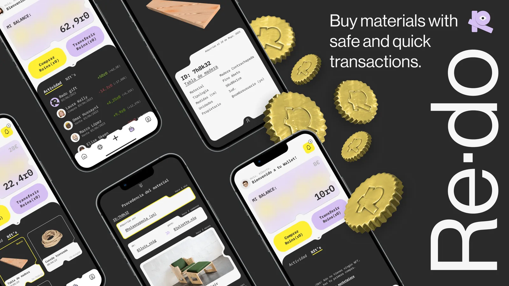
Overview
A digital marketplace where users can buy and sell unwanted and wasted materials from the design and art industries. Supported by Web3 and blockchain technology, Re·do allows users to certify materials and authenticate their sustainable origins, making sure every material sold is 100% recycled or has had other uses.
It also allows users to make easy, fast and safe transactions with their own crypto wallet. A project that brings together sustainability and technology and aims to fight against the huge problematic that creative industries have — where big amounts of perfectly good materials are being wasted and discarded every day.
Re·do provides a vibrant and exciting design that embraces technology-like elements and breaks with the common marketplace aesthetic. Simple to use and very self-explanatory, its navigation is easy and fun to use.
"Re·do, inspired by the English phrase 're-do', encapsulates the core concept of this project. It's about doing something again, but in a different and transformative way — giving recycled materials a second chance, allowing them to gain new life and become part of a sustainable project. Each recycled material becomes unique and special, contributing its own story and helping to create something new and meaningful."
Research & Discovery
The research phase focused on understanding the behaviours and needs of designers and artists who regularly deal with material waste. We mapped out how users currently source, discard, or donate materials, and identified the friction points in existing solutions.
From user interviews and surveys, we built detailed personas, mapped the information architecture, and traced user flows to ensure the marketplace logic felt intuitive — even for users unfamiliar with Web3 concepts.
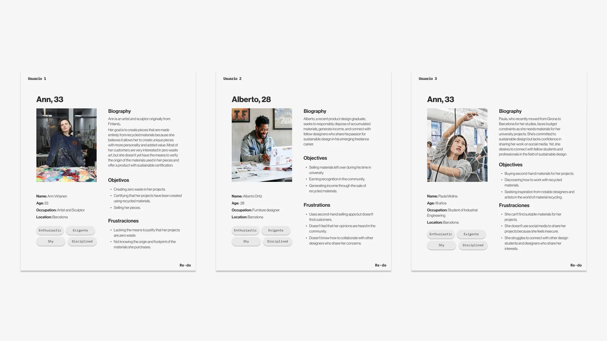
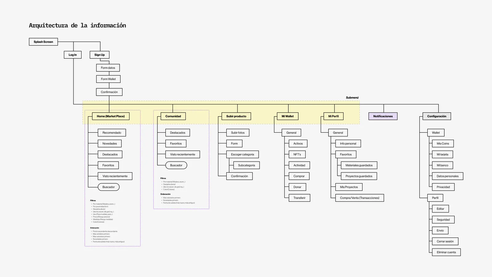
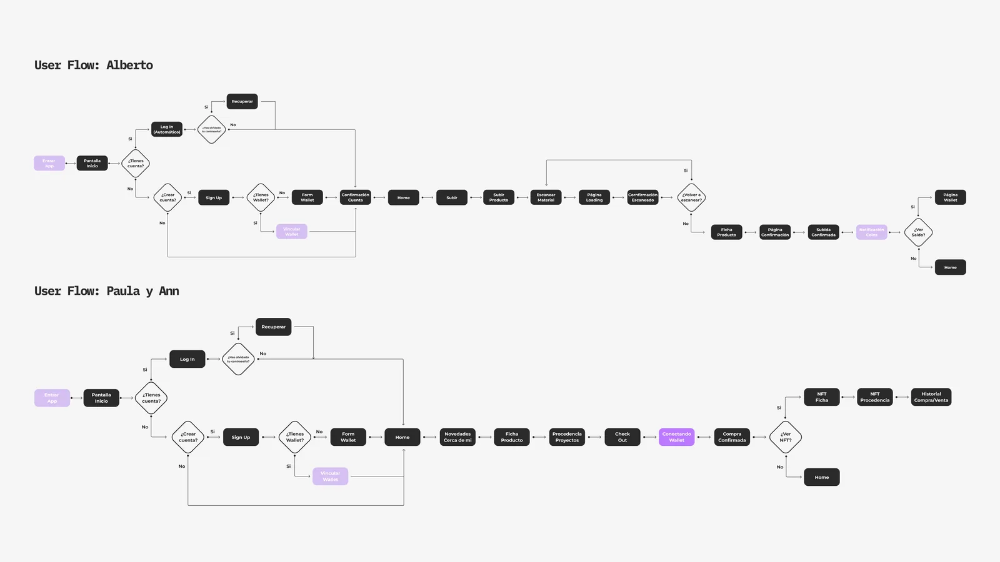
Branding
The entire aesthetic of the app was defined by the use of technology and the choice of colours. By opting for Web3 and blockchain technology, we began to envision a more futuristic and distinctive app — with three-dimensional graphic elements and innovative interactions that set it apart from conventional marketplaces.
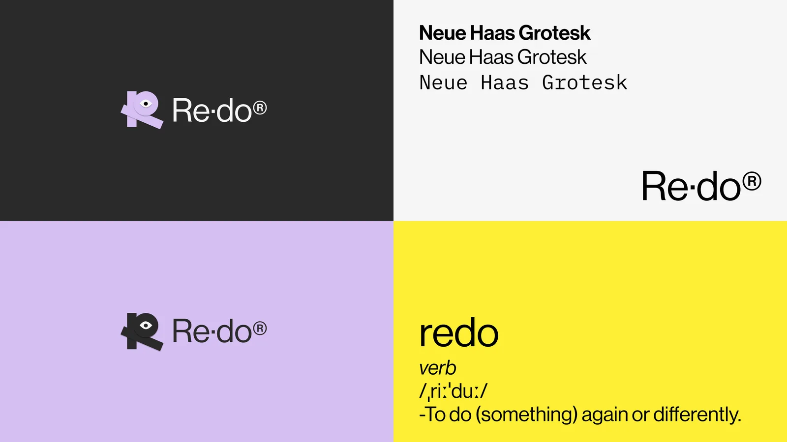
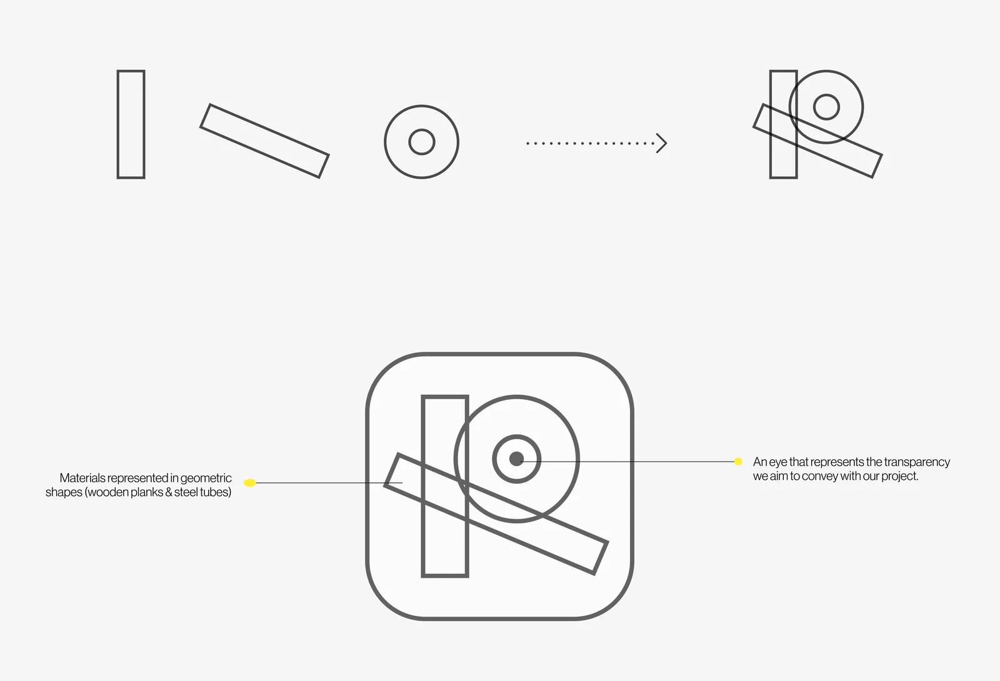
UI Design
To differentiate ourselves from the familiar structure shared by all digital marketplaces, we made a bolder aesthetic choice and stepped away from the ordinary — while finding something users could quickly identify with, that had a foundation and reasoning behind it.
Starting from the deformation of the letter "R" in our logo — very distinctive and recurring in our designs — we created a system of shapes used throughout the visual system in different versions, sizes, and colours. This approach generated a unified, fun, and coherent design language across the entire app.
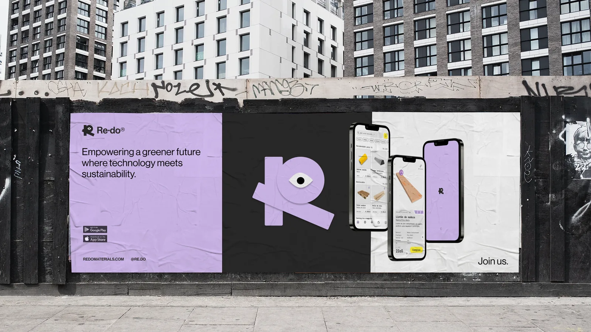
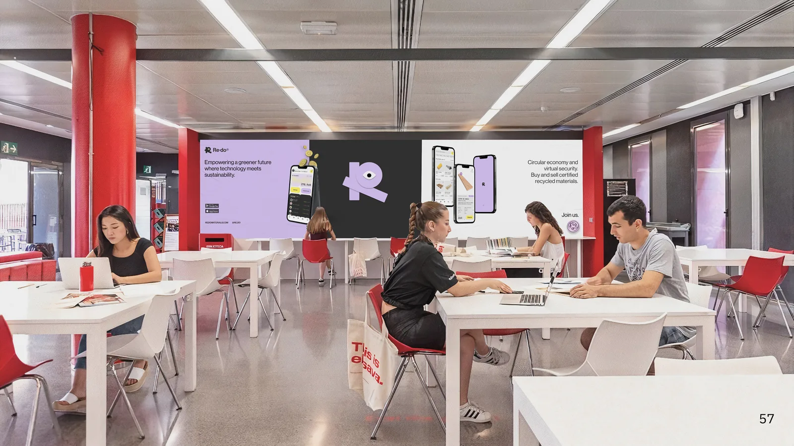
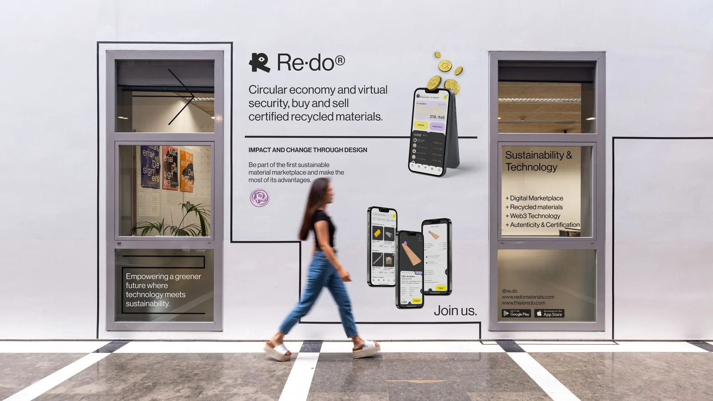
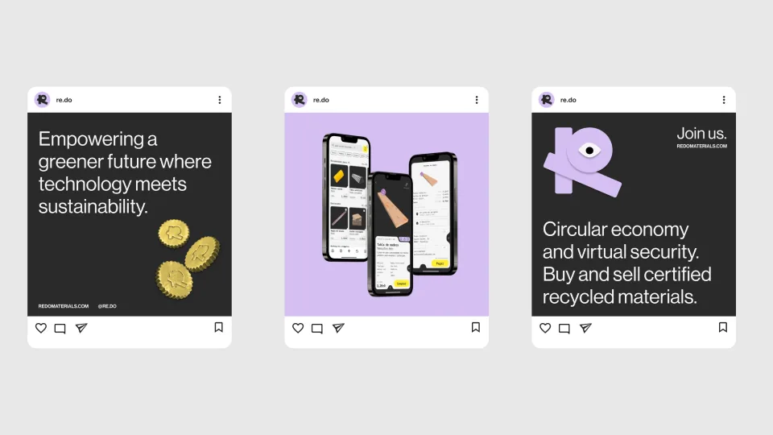
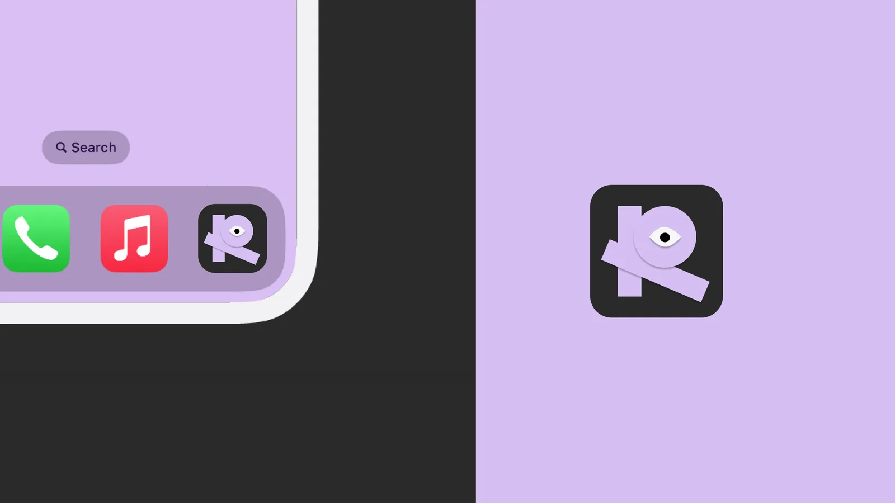
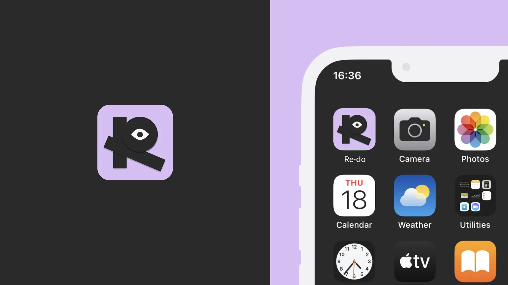
Prototype
Three prototype flows demonstrate the core user journeys: onboarding and listing a material, purchasing a product, and sharing a completed project with the community.
01 — Sign up, onboarding & selling a material
02 — Buying a product
03 — Posting a completed project